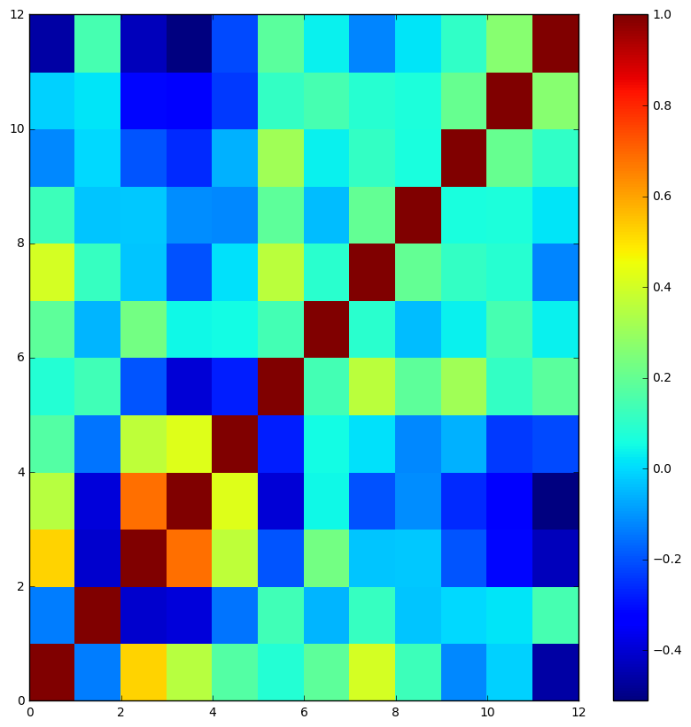
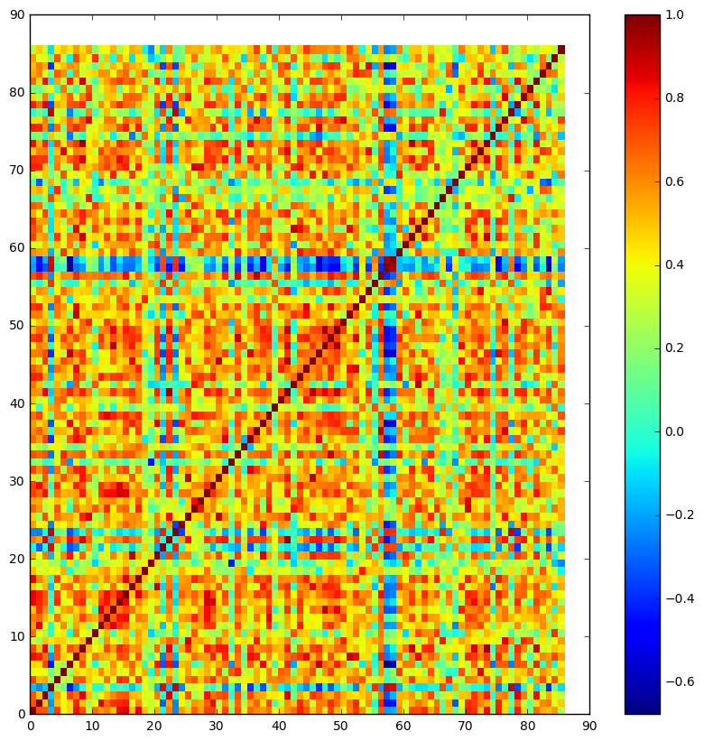

Jupyter QtConsole 4.2.1
Python 3.5.2 |Anaconda 4.2.0 (64-bit)| (default, Jul 5 2016, 11:41:13) [MSC v.1900 64 bit (AMD64)]
Type "copyright", "credits" or "license" for more information.
IPython 5.1.0 -- An enhanced Interactive Python.
? -> Introduction and overview of IPython's features.
%quickref -> Quick reference.
help -> Python's own help system.
object? -> Details about 'object', use 'object??' for extra details.
In [1]:
In [1]: cd "C.A.R.T/Python for Data Analysis (Book)/PythonHarvardX"
C:\Users\azazel\Documents\C.A.R.T\Python for Data Analysis (Book)\PythonHarvardX
In [2]: import numpy as np
In [3]: import pandas as pd
In [4]: whiskey = pd.read_csv("whiskies.txt")
In [5]: whiskey['regions'] = pd.read_csv("regions.txt") #added regions as a seperate column after reading it from regions.txt file
In [6]: whiskey.head()
Out[6]:
RowID Distillery Body Sweetness Smoky Medicinal Tobacco Honey Spicy \
0 1 Aberfeldy 2 2 2 0 0 2 1
1 2 Aberlour 3 3 1 0 0 4 3
2 3 AnCnoc 1 3 2 0 0 2 0
3 4 Ardbeg 4 1 4 4 0 0 2
4 5 Ardmore 2 2 2 0 0 1 1
Winey Nutty Malty Fruity Floral Postcode Latitude Longitude \
0 2 2 2 2 2 \tPH15 2EB 286580 749680
1 2 2 3 3 2 \tAB38 9PJ 326340 842570
2 0 2 2 3 2 \tAB5 5LI 352960 839320
3 0 1 2 1 0 \tPA42 7EB 141560 646220
4 1 2 3 1 1 \tAB54 4NH 355350 829140
regions
0 Highlands
1 Speyside
2 Highlands
3 Islay
4 Highlands
In [7]: whiskey.tail()
Out[7]:
RowID Distillery Body Sweetness Smoky Medicinal Tobacco Honey \
81 82 Tobermory 1 1 1 0 0 1
82 83 Tomatin 2 3 2 0 0 2
83 84 Tomintoul 0 3 1 0 0 2
84 85 Tormore 2 2 1 0 0 1
85 86 Tullibardine 2 3 0 0 1 0
Spicy Winey Nutty Malty Fruity Floral Postcode Latitude \
81 0 0 1 2 2 2 PA75 6NR 150450
82 2 1 1 2 0 1 IV13 7YT 279120
83 2 1 1 2 1 2 AB37 9AQ 315100
84 0 1 2 1 0 0 PH26 3LR 315180
85 2 1 1 2 2 1 PH4 1QG 289690
Longitude regions
81 755070 Islands
82 829630 Highlands
83 825560 Speyside
84 834960 Speyside
85 708850 Highlands
In [8]: whiskey.iloc[0:10] #rows from 0 to 10
Out[8]:
RowID Distillery Body Sweetness Smoky Medicinal Tobacco Honey \
0 1 Aberfeldy 2 2 2 0 0 2
1 2 Aberlour 3 3 1 0 0 4
2 3 AnCnoc 1 3 2 0 0 2
3 4 Ardbeg 4 1 4 4 0 0
4 5 Ardmore 2 2 2 0 0 1
5 6 ArranIsleOf 2 3 1 1 0 1
6 7 Auchentoshan 0 2 0 0 0 1
7 8 Auchroisk 2 3 1 0 0 2
8 9 Aultmore 2 2 1 0 0 1
9 10 Balblair 2 3 2 1 0 0
Spicy Winey Nutty Malty Fruity Floral Postcode Latitude \
0 1 2 2 2 2 2 \tPH15 2EB 286580
1 3 2 2 3 3 2 \tAB38 9PJ 326340
2 0 0 2 2 3 2 \tAB5 5LI 352960
3 2 0 1 2 1 0 \tPA42 7EB 141560
4 1 1 2 3 1 1 \tAB54 4NH 355350
5 1 1 0 1 1 2 KA27 8HJ 194050
6 1 0 2 2 3 3 G81 4SJ 247670
7 1 2 2 2 2 1 \tAB55 3XS 340754
8 0 0 2 2 2 2 \tAB55 3QY 340754
9 2 0 2 1 2 1 \tIV19 1LB 270820
Longitude regions
0 749680 Highlands
1 842570 Speyside
2 839320 Highlands
3 646220 Islay
4 829140 Highlands
5 649950 Islands
6 672610 Lowlands
7 848623 Speyside
8 848623 Speyside
9 885770 Highlands
In [9]: whiskey.iloc[0:10, 0:5] #rows from 0 to 10. columns from 0 to 5
Out[9]:
RowID Distillery Body Sweetness Smoky
0 1 Aberfeldy 2 2 2
1 2 Aberlour 3 3 1
2 3 AnCnoc 1 3 2
3 4 Ardbeg 4 1 4
4 5 Ardmore 2 2 2
5 6 ArranIsleOf 2 3 1
6 7 Auchentoshan 0 2 0
7 8 Auchroisk 2 3 1
8 9 Aultmore 2 2 1
9 10 Balblair 2 3 2
In [10]: whiskey.columns
Out[10]:
Index(['RowID', 'Distillery', 'Body', 'Sweetness', 'Smoky', 'Medicinal',
'Tobacco', 'Honey', 'Spicy', 'Winey', 'Nutty', 'Malty', 'Fruity',
'Floral', 'Postcode', ' Latitude', ' Longitude', 'regions'],
dtype='object')
In [11]: flavours = whiskey.iloc[:,2:14] #extracting data from table
In [12]: """
...:
...: @@@@@@@@@ PEARSON CORELATION @@@@@@@@
...:
...: """
Out[12]: '\n\n @@@@@@@@@ PEARSON CORELATION @@@@@@@@\n\n'
In [13]: corr = pd.DataFrame.corr(flavours)
In [14]: print(corr)
Body Sweetness Smoky Medicinal Tobacco Honey \
Body 1.000000 -0.136518 0.524032 0.354050 0.168718 0.082031
Sweetness -0.136518 1.000000 -0.405897 -0.392017 -0.147871 0.132558
Smoky 0.524032 -0.405897 1.000000 0.686071 0.365501 -0.195318
Medicinal 0.354050 -0.392017 0.686071 1.000000 0.425106 -0.396629
Tobacco 0.168718 -0.147871 0.365501 0.425106 1.000000 -0.275490
Honey 0.082031 0.132558 -0.195318 -0.396629 -0.275490 1.000000
Spicy 0.188500 -0.054200 0.231745 0.044903 0.054068 0.139563
Winey 0.408576 0.115727 -0.028190 -0.202651 0.009097 0.362021
Nutty 0.126323 -0.032493 -0.023132 -0.113671 -0.117717 0.188492
Malty -0.116859 -0.001516 -0.192875 -0.258959 -0.059347 0.310184
Fruity -0.013205 0.019820 -0.312970 -0.330975 -0.235145 0.108822
Floral -0.461203 0.144987 -0.431663 -0.511323 -0.212375 0.183029
Spicy Winey Nutty Malty Fruity Floral
Body 0.188500 0.408576 0.126323 -0.116859 -0.013205 -0.461203
Sweetness -0.054200 0.115727 -0.032493 -0.001516 0.019820 0.144987
Smoky 0.231745 -0.028190 -0.023132 -0.192875 -0.312970 -0.431663
Medicinal 0.044903 -0.202651 -0.113671 -0.258959 -0.330975 -0.511323
Tobacco 0.054068 0.009097 -0.117717 -0.059347 -0.235145 -0.212375
Honey 0.139563 0.362021 0.188492 0.310184 0.108822 0.183029
Spicy 1.000000 0.092704 -0.042856 0.036303 0.144714 0.034663
Winey 0.092704 1.000000 0.198467 0.112368 0.090694 -0.126932
Nutty -0.042856 0.198467 1.000000 0.066157 0.071765 0.018302
Malty 0.036303 0.112368 0.066157 1.000000 0.207288 0.106309
Fruity 0.144714 0.090694 0.071765 0.207288 1.000000 0.262336
Floral 0.034663 -0.126932 0.018302 0.106309 0.262336 1.000000
In [15]: import matplotlib.pyplot as plt
In [16]: plt.figure((figsize=10,10))
File "<ipython-input-16-7b0c7709fc8e>", line 1
plt.figure((figsize=10,10))
^
SyntaxError: invalid syntax
In [17]: plt.figure(figsize=(10,10))
Out[17]: <matplotlib.figure.Figure at 0x2d56a5abb00>
In [18]: plt.pcolor(corr)
Out[18]: <matplotlib.collections.PolyCollection at 0x2d56a9569e8>
In [19]: plt.colorbar()
Out[19]: <matplotlib.colorbar.Colorbar at 0x2d56a9ee898>
In [20]: plt.show()

In [21]: corr_whiskey = pd.DataFrame.corr(flavours.transpose())
...: plt.figure(figsize=(10,10))
...: plt.pcolor(corr_whiskey)
...: plt.colorbar()
...: plt.show()
...:

In [22]: